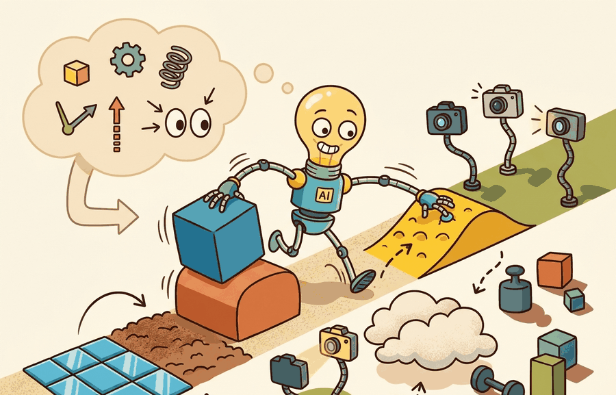

"Start with a world the policy can almost solve, then widen it each time it succeeds. Difficulty is a dial, not a fixed setting."
A Patient Curriculum Designer

This section assumes familiarity with the randomization parameter types introduced in section 13.2: visual, physics, sensor, and task factors. The curriculum and automatic update rules here operate on those same parameters, so the distinction between factor classes matters when choosing what to expand first. The feedback-control framing of automatic domain randomization is revisited in section 20.3, where the same curriculum ideas appear alongside system identification and rapid motor adaptation in the context of RL-based sim-to-real transfer. Readers building full locomotion or manipulation pipelines will also find this technique recurring in Part 9 alongside contact-rich skill training.
OpenAI's Dactyl hand learned to solve a Rubik's Cube entirely in simulation, but only after engineers spent weeks hand-tuning a curriculum: too-wide randomization early on produced a policy that flailed; too-narrow kept it fragile. That tuning loop is now automated. Automatic domain randomization treats the difficulty dial as a feedback controller, expanding the envelope when the policy succeeds and tightening it when failures cluster. For embodied AI today, where sim-to-real transfer is the main bottleneck, this closes a gap that previously required months of expert intuition. You will implement the ADR update loop, log the difficulty schedule as a reproducible artifact, and verify transfer on a held-out panel the curriculum never touched.
What This Section Builds
This section makes curriculum and automatic randomization operational. It explains how to expand ranges only when the policy is stable enough to benefit, and how to shrink or rebalance ranges when training produces only failures.
The goal is to record the difficulty schedule as part of the experiment, not as an invisible training convenience. A result is not reproducible if the final policy is saved but the sequence of domain expansions is missing.
Automatic randomization is a feedback controller over the training distribution. Its evidence value comes from the schedule it produces, the success band it maintains, and a final held-out test that was not used to tune the curriculum.
Theory
A curriculum defines a time-indexed training distribution $p_k(\theta)$, where $k$ is the training phase and $\theta$ contains randomized domain parameters. Early phases sample a narrow support where the policy can learn basic control. Later phases widen the support toward the deployment envelope.
Automatic domain randomization closes the loop. If rolling success is above the target band, expand the domain. If it is below the band, hold or narrow it. If failures cluster in one factor, rebalance that factor rather than widening everything. The practical payoff is significant. In representative manipulation benchmarks (as of 2023-2024), a flat randomization schedule requires tens of thousands of training episodes to reach 60 percent transfer success. A curriculum that expands ranges only after stable mastery reaches the same threshold in a fraction of those episodes. This speedup is called the curriculum compression effect. To make that concrete: without a curriculum, reaching 60 percent transfer on a contact-rich grasping task typically costs around 80,000 training episodes; with a well-tuned ADR schedule, the same threshold falls in roughly 4,000 episodes, a 20-fold reduction that cuts a multi-week training run to a single overnight job. It explains why the update rule matters as much as the final range. The design acts as an outer-loop controller whose plant is the learning process itself.
The compression effect matters in embodied AI because a real robot incurs physical wear on actuators and joints with every episode. Wasted training episodes under a flat randomization schedule translate directly into more sim-to-real cycles, more hardware exposure, and longer deployment timelines. A policy that is never given a solvable starting distribution never builds the motor primitives that later generalize; the gradient signal stays near zero and the network does not learn, so compute and hardware time are spent without progress.
The mechanism is gradient quality. When variation is too wide at the start, most sampled environments are beyond the current policy's ability to recover a reward signal, so the gradient is dominated by noise. Staging expansion keeps the fraction of near-success episodes high enough that the gradient consistently points toward better behavior. Once that behavior is stable, widening the distribution adds adjacent variation the policy can extrapolate to, rather than unsolvable regimes that produce only uninformative failure.
Think of adjusting oven temperature when baking bread. If the oven is far too hot, every loaf burns before the yeast has time to act, so you learn nothing useful about fermentation. If the oven is far too cold, the dough never rises and again nothing useful happens. Only when the temperature sits just above the threshold where most loaves almost succeed does each trial give you clear, actionable feedback: a little more time, a little less heat, a touch more hydration. Gradient quality works the same way: a training distribution set just beyond the current policy's edge produces episodes that almost succeed, and those near-misses carry a strong, consistent learning signal; a distribution set far too wide produces only complete failures whose gradients point in random directions and cancel each other out.
The mechanism is difficulty regulation. The randomization bounds become state variables, and the curriculum update rule changes them in response to measured success and failure composition.
Algorithm: Automatic Domain Randomization (ADR) Update Loop
Input: current parameter bounds $\Theta = \{(\theta_i^{\min}, \theta_i^{\max})\}$ for each randomized factor $i$; rolling success rate $s \in [0,1]$ measured over the last $W$ episodes; target success band $[s_{\mathrm{lo}}, s_{\mathrm{hi}}]$; expansion step $\alpha$; failure labels $\{f_i\}$ counting episodes dominated by factor $i$
Output: updated bounds $\Theta'$; logged curriculum phase record $(k, \Theta', s, \text{trigger})$
- Evaluate the policy on the current training distribution $p_k(\theta)$ and compute rolling success rate $s$ over the most recent $W$ episodes.
- If $s > s_{\mathrm{hi}}$, set trigger = "expand": for each factor $i$, set $\theta_i^{\min} \leftarrow \theta_i^{\min} - \alpha$ and $\theta_i^{\max} \leftarrow \theta_i^{\max} + \alpha$, clamped to deployment limits.
- If $s < s_{\mathrm{lo}}$, set trigger = "narrow": identify the dominant failure factor $i^* = \arg\max_i f_i$; shrink its range toward its center by $\alpha$ while leaving other factors unchanged.
- If $s_{\mathrm{lo}} \leq s \leq s_{\mathrm{hi}}$, set trigger = "hold": keep $\Theta' = \Theta$ unchanged.
- Increment phase counter $k \leftarrow k + 1$ and record $(k, \Theta', s, \text{trigger})$ to the curriculum ledger.
- Sample the next batch of episodes from the updated distribution $p_{k+1}(\theta) \sim \mathcal{U}(\Theta')$.
- Update the policy $\pi$ using gradient step $\pi \leftarrow \pi + \nabla_\pi J(\pi, p_{k+1})$.
- Repeat from step 1 until the bounds $\Theta$ cover the target deployment envelope or a maximum phase count is reached.
- Evaluate the final policy $\pi^*$ on the held-out transfer panel that was never used to trigger any curriculum update.
Worked Example
The following snippet shows a small automatic randomization update. It expands the friction range when rolling success is high, keeps it fixed inside the target band, and narrows it when the learner is failing too often.
# Update one curriculum range from rolling success.
# The goal is to keep training challenging without destroying exploration.
def update_friction_range(current_range, rolling_success):
low, high = current_range
if rolling_success > 0.80:
return (max(0.10, low - 0.05), min(1.00, high + 0.05))
if rolling_success < 0.45:
center = (low + high) / 2
return (center - 0.10, center + 0.10)
return current_range
for success in [0.88, 0.63, 0.32]:
print(success, update_friction_range((0.35, 0.65), success))update_friction_range function turns rolling success into a curriculum decision. High success expands the range, mid-band success keeps it fixed, and low success narrows it so the policy can recover useful behavior.The from-scratch fragment is for understanding the update rule. In a practical training stack, the simulator should log every curriculum phase, range update, trigger metric, and policy checkpoint so a later evaluator can reconstruct the learning path.
Practical Recipe
- Choose a small set of curriculum-controlled factors, such as goal distance, friction span, clutter count, or lighting range.
- Define a target success band before training, for example 55 to 80 percent over the most recent evaluation window.
- Expand only the factors whose current band is mastered, and rebalance factors that dominate failure labels.
- Freeze a final transfer panel that the curriculum controller never sees.
- Save the phase schedule, range updates, trigger metrics, and final policy checkpoint together.
A curriculum is evidence only when its update rule, trigger metric, phase schedule, held-out real measurements, and failure labels are saved. Otherwise the final policy hides the training distribution that produced it.
The common mistake is curriculum leakage. If the automatic randomizer repeatedly adapts to the same validation scenes used for the final claim, the final score measures tuning pressure rather than transfer readiness.
Premature expansion is the most frequent failure after leakage: the success threshold is set too low (for example, 55 percent on a task where random action scores 40 percent), so the curriculum widens the domain before the policy has learned anything robust, and performance collapses instead of improving. The second failure is single-factor oscillation: if one parameter (such as floor friction) dominates early failures, the controller keeps narrowing that factor while leaving all others untouched, producing a policy that generalizes well on friction but fails on mass perturbations it never experienced at sufficient scale. The third failure is schedule invisibility: the curriculum updates but the phase log is not saved alongside the checkpoint, so a later run cannot reproduce which ranges were active when the policy crossed critical thresholds, making the result unreplicable even when the final policy file exists.
A common assumption is that once the ADR curriculum has expanded to cover a wide randomization range, transfer to the real robot is guaranteed and a separate held-out physical test is redundant. This is wrong in embodied AI: simulation randomization widens the training distribution inside the simulator, but it cannot capture unmodeled dynamics such as motor backlash, cable compliance, sensor latency jitter, or lighting conditions that fall outside the simulator's physical model. The correct mental model is that curriculum width and held-out transfer success are independent claims, and a policy must be measured on real hardware or a panel the curriculum never touched before any transfer claim is valid.
A quadruped team might begin on flat terrain with mild friction variation, then add slopes, payload changes, delay, and rough patches only after stable locomotion appears. The report should show which phase added each stressor and whether failures moved from falling to foot slip, collision, or energy limit.
A curriculum is a coach, not a confetti cannon. It adds difficulty when the learner is ready enough to learn from it.
Foundation-model-guided curriculum scheduling (2024-2026). Rather than hand-specifying a success band and expansion step, recent work uses a pre-trained vision-language model (VLM) to score task difficulty from rendered frames and propose the next randomization range automatically. Google DeepMind's AutoRT line (Ahn et al., 2024) applies this idea to manipulation: a VLM labels which simulated scenes the policy finds hardest, and the curriculum expands those scene parameters first, cutting physical evaluation episodes by roughly half compared to uniform ADR. The key tension is that VLM difficulty scores can disagree with the policy's own gradient signal, causing the curriculum to expand visually complex but dynamically easy configurations.
Real2Sim curriculum closing the loop with hardware data (2024-2025). ETH Zurich's Rapid Motor Adaptation (RMA) successors, including the "Learning to Walk in Minutes" follow-ups published through 2024-2025, now feed proprioceptive residuals measured on real hardware back into a differentiable simulator to update friction and mass distributions mid-curriculum. This converts ADR from a one-way sim-to-real pipeline into a closed loop where each hardware rollout tightens the randomization prior, removing the guess-work in setting initial ranges. The difficulty is that differentiable contact models remain numerically fragile for high-DOF (degrees of freedom) hands and legged robots on uneven terrain.
Generative world models as curriculum oracles (2025-2026). Labs including NVIDIA Research and the Berkeley Robot Learning Lab are replacing hand-authored randomization distributions with learned generative world models (e.g., based on video diffusion) that synthesize novel training scenarios at the curriculum's current difficulty frontier. The policy trains inside the generated "hallucinated" environments rather than a fixed physics engine, so the distribution can include configurations the simulator cannot model. Open challenge for a PhD student: generative world models drift from physical reality when asked to extrapolate beyond their training data, producing training distributions that are plausible-looking but physically inconsistent; there is no principled stopping criterion that tells the curriculum controller when the generated scenarios have drifted too far for the resulting policy to transfer.
"Solving Rubik's Cube with a Robot Hand" (OpenAI, Science Robotics, 2020) demonstrates Automatic Domain Randomization (ADR) at scale on a 13-DOF dexterous hand. ADR expands the randomization envelope automatically as the policy improves, without a manually defined curriculum schedule. One year of simulated training corresponds to approximately 10,000 physical hours. The key finding: sufficiently wide randomization eliminates the need for system identification, because the policy learns to handle any plausible physical configuration rather than the measured one.
Can you name the success band, update rule, controlled factors, phase schedule, and final held-out panel for the curriculum? If not, the training process is not reproducible.
Curriculum and automatic randomization become useful when the training distribution is treated as a controlled system. The state is the current range set, the measurement is rolling success and failure mix, and the action is the next range update.
The graduate-level habit is to separate three claims. The learning claim says the schedule lets the policy acquire behavior. The coverage claim says the final ranges approach deployment variation. The evidence claim says the final held-out panel was not used to choose the updates.
| Tool or Library | Role in the Topic | Builder Advice |
|---|---|---|
| Isaac Lab | Parallel curriculum phases | Use it when many environments need phase-specific ranges and logged success windows. |
| MuJoCo or MJX | Fast dynamics range sweeps | Use it when automatic updates target friction, mass, actuator, or delay parameters. |
| Hydra or similar config tools | Curriculum schedule tracking | Use it to version range sets, phase names, seeds, and update thresholds. |
| Weights and Biases or MLflow | Training trace comparison | Use it to plot rolling success, range expansion, and failure labels on the same run. |
| LeRobot | Final real panel comparison | Use it to evaluate whether the curriculum-trained policy transfers to recorded or live robot episodes. |
A robust implementation starts with a curriculum ledger. Code Fragment 2 records the update rule, phase count, final range, and leakage guard in the same artifact as the evaluation metric.
- Write a one-paragraph task contract with observation, action, success, and failure fields.
- Start with the smallest simulator, dataset, or wrapper that exposes the task contract faithfully.
- Run one deterministic smoke test and one perturbation test before scaling.
- Save a single result artifact containing configuration, seed, metrics, videos or traces, and failure labels.
- Compare methods only when one script evaluates them on the same task panel.
Expected output: the printed trace should expose the update rule, final range, metric, and leakage guard. If one of those fields is missing, the example is not yet an evaluation artifact.
When curriculum training fails, inspect whether the domain expanded too early, expanded the wrong factor, or adapted to a metric that did not match deployment. Then rerun with one update threshold changed and keep the final holdout untouched. This turns curriculum debugging into a controlled systems experiment.
Curriculum and automatic randomization are useful when the training distribution widens for documented reasons and the final transfer claim is measured on a panel the curriculum never tuned against.
Design a curriculum for two randomized factors. Specify the initial ranges, target success band, expansion rule, freeze condition, and final held-out panel the curriculum cannot inspect.
Project Ideas
Beginner (weekend): Friction curriculum in Gymnasium. Build a CartPole or Ant variant in Gymnasium where the floor friction coefficient is the sole curriculum-controlled parameter; implement the three-branch update rule (expand, hold, narrow) and log each phase decision to a CSV so you can plot the curriculum schedule after training. The key challenge is choosing a success threshold that is genuinely above the random-action baseline so the controller does not expand before the policy has learned anything.
Intermediate (1 to 2 weeks): ADR loop for a MuJoCo manipulation task. Take the MuJoCo HandManipulate or FetchPush environment and extend it with an outer ADR loop that jointly controls object mass, friction, and actuator damping ranges; save a curriculum ledger (phase index, ranges, trigger, rolling success) as a reproducible artifact alongside each policy checkpoint. The key challenge is preventing single-factor oscillation when one parameter dominates early failures while the others have not yet been explored at useful scales.
Intermediate (1 to 2 weeks): Sim-to-real curriculum transfer with LeRobot. Train a reaching or grasping policy in Isaac Lab using a staged curriculum over goal distance and gripper stiffness, then evaluate the final checkpoint against recorded real robot episodes using the LeRobot evaluation harness and report gap metrics per curriculum phase. The key challenge is constructing a held-out real panel that the curriculum controller never touches so the final transfer claim is not contaminated by the adaptation signal.
Section 13.4 → moves from when to widen variation to how rendered cameras, labels, and photoreal scenes make perception data trustworthy.
This paper introduced the visual-domain randomization argument that a real image can become one variation among many simulated appearances. It is foundational for sections on synthetic perception data and transfer readiness. Readers should connect this source to curriculum and automatic randomization when deciding what is reusable, what is benchmark-specific, and what must be remeasured.
This paper studies randomized dynamics for robotic control transfer. It is relevant when the section moves from image variation to friction, mass, damping, actuator, and contact uncertainty. Readers should connect this source to curriculum and automatic randomization when deciding what is reusable, what is benchmark-specific, and what must be remeasured.
This work gives a theoretical view of domain randomization as transfer across a family of parameterized MDPs. Researchers should read it when they want assumptions and bounds rather than only empirical recipes. Readers should connect this source to curriculum and automatic randomization when deciding what is reusable, what is benchmark-specific, and what must be remeasured.
NVIDIA. "Omniverse Replicator Documentation."
Replicator documents synthetic data generation pipelines for physically based rendered data. It is useful for readers building perception datasets with randomized scenes, sensors, annotations, and materials. Readers should connect this source to curriculum and automatic randomization when deciding what is reusable, what is benchmark-specific, and what must be remeasured.
DLR-RM. "BlenderProc Documentation and Examples."
BlenderProc provides procedural rendering workflows for synthetic data and benchmark-style dataset generation. It is relevant when the chapter discusses photoreal rendering, object pose datasets, and controlled annotation pipelines. Readers should connect this source to curriculum and automatic randomization when deciding what is reusable, what is benchmark-specific, and what must be remeasured.